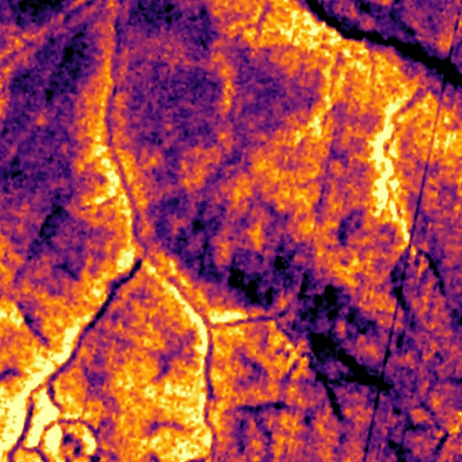

Benchmark / Near-lossless / l8-tirs-2 / l8-tirs-2-07
l8-tirs-2-07
congo · 2023-02-11 · sample details
Each point shows a configuration at this budget level. The line shows the best observed trade-offs. The All corpora view pools size and decode time across samples for configurations completed on every corpus with results at this level. Broken promises are listed below.
